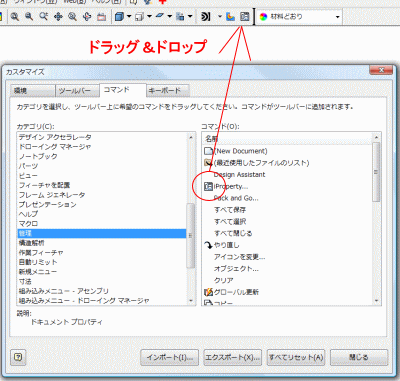
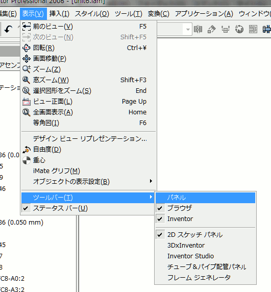
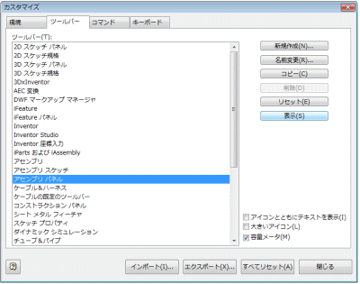
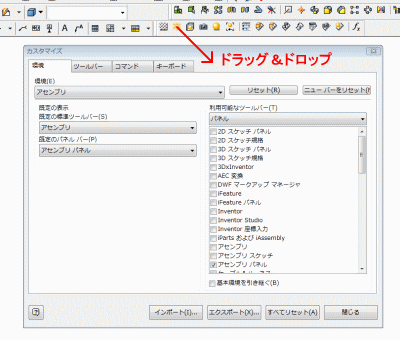
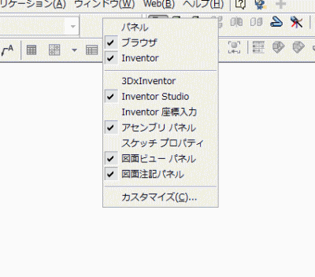

カスタマイズ
キーボードによるコマンドキーの割り当てを設定したり、「ツールバー」によく使うコマンドを追加したりします。
１．キーの割り当て作業性向上の為、独自に単一キーを割り当てました。 |
|||
操作方法 |
|||
 |
肩こりと腕がだるい症状があり接骨院に行ったところ、頚肩腕症候群（けいけいわんしょうこうぐん）と言われました。治療法としては色々あるみたいですが、一番は安静みたいです。しかし仕事をしないわけにはいかないので、極力同じ動き（マウスのみの動き）にならないように、キーボードも併用しています。 割り当てのキーを覚えるまで少し時間がかかるかもしれませんが、覚えてしまうと作業性向上（設計工数削減）につながると思います。 |
||
ショートカットキー一覧管理人がやりやすいように割り当てた（変更した）ショートカット（エイリアス）も含まれますので参考にしてください。 | |||
| キー | コマンド名 | キー | コマンド名 |
| , | 置換 | F10 | スケッチ |
| - | 放射状パターン | F5 | 前のビュー |
| / | 作業軸 | F6 | 等角図 |
| 0 | ワイヤフレーム表示 | F7 | 切断して表示 |
| 1 | 面とエッジを選択 | G | コンポーネント回転 |
| 2 | パーツ優先 | H | 穴 |
| 3 | コンポーネント優先 | H | 穴/ねじ注記 |
| 4 | フィーチャ優先 | Home | 全画面表示 |
| 7 | 選択のみ表示 | I | 距離を計測 |
| 8 | 選択のみ表示を取り消し | J | ジオメトリを投影 |
| ; | 同じ値 | K | 2 点長方形 |
| @ | ベース ビュー | K | 記号 |
| [ | 投影図 | L | 線分 |
| \ | iProperty... | M | フィーチャ移動 |
| \ | 部品表... | M | 水平 |
| ] | 作業平面 | M | 面取り |
| ^ | 矩形状パターン | M | 面取りの注記 |
| A | 面 | N | 2 等分中心線 |
| Alt+F11 | Visual Basic Editor | N | コンポーネント作成... |
| Alt+F8 | マクロ... | N | 垂直 |
| B | バルーン | Num . | シェーディング表示 |
| B | 一致 | O | ミラー |
| C | 中心マーク | O | ミラー |
| C | 中心点円 | O | 累進寸法セット |
| C | 拘束... | P | コンポーネント配置... |
| Ctrl+\ | 回転 | P | パーツ一覧 |
| Ctrl+] | ユーザ作業平面 | P | ピン配置 |
| Ctrl+A | すべて選択 | P | 回転 |
| Ctrl+C | コピー | Page Down | 戻る |
| Ctrl+N | 新規作成... | Page Up | ビュー正面 |
| Ctrl+O | 開く... | Q | iMate を作成 |
| Ctrl+P | 印刷... | Q | 自動バルーン |
| Ctrl+V | 貼り付け | R | 回転 |
| Ctrl+X | 切り取り | S | 2D スケッチ |
| Ctrl+Y | やり直し | Shift+F3 | 窓ズーム |
| Ctrl+Z | 元に戻す | Shift+F5 | 次のビュー |
| D | 一般寸法 | Shift+Tab | プロモート |
| Down | 引出線注記 | T | コンポーネントをツイーク... |
| E | 押し出し | T | 文字 |
| E | 編集 | Tab | レベルを下に移動 |
| End | 選択図形をズーム | V | コンポーネント移動 |
| F | ファン イン | V | 同一直線上 |
| F | フィレット | V | 面の指示記号 |
| F | フィレット | X | シート メタル スタイル |
| F | 幾何公差記号 | Y | 点、中心点 |
| F1 | ヘルプトピックの検索 | Z | フランジ |
２．コマンドの追加作業性向上の為「ツールバーよく使う操作や命令のアイコンなどが並べられた部分」によく使うコマンドを追加しています。 |
|||
操作方法 |
|||
|  |
|
||
３．ツールバーのカスタマイズ「ツールバー」へのコマンドの追加だけではなく、さらに作業性を良くする為｢パネルバー押し出しや回転などのツールが表示される部分｣（通常左側にある「パネルバー」の表示を削除します。）を「ツールバー」に移動し、かつ普段使用するコマンドだけを表示しています。 |
|||
操作方法 |
|||
|  |
|
||
|  |
|
||
|  |
|
||
|  |
|
||